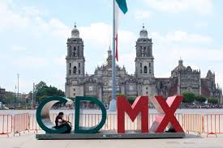

Bienvenidos a la Ciudad de México: El Corazón Cultural de América

| Nombre | Ciudad de Mexico |
| Fundacion | Año 1325(como Mexico-Tenochtitlan |
| Poblacion | 9.2 millones(mas de 22 millones en la zona metropolitana) |
| Altitud | 2,240 metros sobre el nivel del mar |
| Clima | Templado |
| Division | 16 alcaldias |
| Cultura | Mas de 150 museos y 4 zonas Patrimonio de la Humanidad(UNESCO) |
| Transporte | Metro,metrobus,cablebus y ecobici |
Historia, sabor y vida en cada rincón.
La Ciudad de México es una de las metrópolis más vibrantes, antiguas y fascinantes del mundo. Fundada sobre las ruinas de la gran Tenochtitlan, hoy es un crisol donde el pasado prehispánico, la elegancia colonial y la modernidad más vanguardista conviven en perfecta armonía. Con más de 150 museos, miles de restaurantes y una energía que nunca duerme, la CDMX tiene una historia lista para contarte.